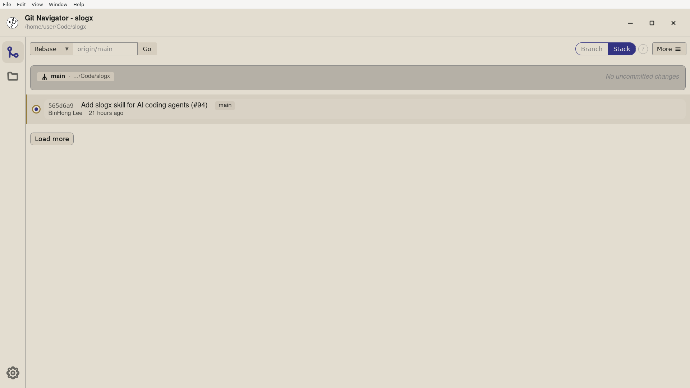

The Visual Commit Graph turns git log into a living, interactive map of your repository. Branches, tags, and merges are laid out as a tree so you can read history the way you think about it — and act on it directly.

Refs are drawn right on the commits they point to, so you never lose track of where a branch tip or release tag actually sits.
Git Navigator gives the commit at HEAD a larger, ringed dot and a tinted row, so where you are sits one glance away from anything else on the graph.
Parent–child relationships are drawn as lanes, making merges, forks, and divergence obvious instead of inferred.
Star the branches you care about and they stay visible even when the rest of the graph scrolls away.
.git directory. The full commit graph renders immediately — no command to run.HEAD is drawn with a larger, ringed dot and a tinted row, so spotting where you are is one glance. Branch and tag labels sit on the commits they reference.HEAD.git log --graph prints an ASCII tree in your terminal that you can only read. Git Navigator renders the same topology as an interactive graph you can act on — click a commit to check it out, drag to rebase, and see branch and tag labels drawn inline.
Yes. The graph lays out your branches as parallel lanes so you can see the full topology — mainline, feature branches, merges, and tags — in a single view, with your current position highlighted.
Click any commit in the graph to check it out. Git Navigator moves the current-commit highlight to the new HEAD so you always know where you are.
Yes. The Visual Commit Graph is part of the shared Git Navigator product surface and works the same way in the VS Code extension and the standalone desktop app.